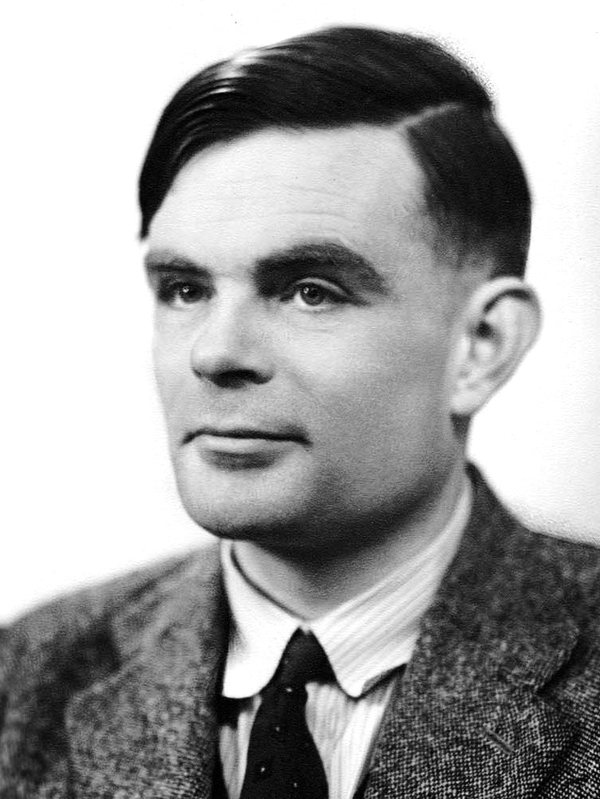

23. Juni 1912 – 7. Juni 1954
Mathematiker, Codeknacker und einer der Begründer der Informatik. Er beschrieb, was ein Computer im Prinzip kann, half die Enigma zu brechen und fragte als einer der Ersten, ob Maschinen denken können.

Filtere die Zeitleiste nach Thema, um einzelne Linien seines Lebens zu verfolgen.
Ab dem 4. September 1939 arbeitete Turing in Bletchley Park, dem geheimen britischen Entschlüsselungszentrum. Wie die Enigma funktioniert, kannst du auf der Seite Die Enigma ausprobieren. Hier geht es darum, wie Turing sie geknackt hat.
Seine Idee: Man rät nicht den ganzen Schlüssel, sondern beginnt mit einem Crib – einem Wort, das sehr wahrscheinlich im Funkspruch vorkommt. Wetterstationen meldeten jeden Morgen zur gleichen Zeit, und ihre Sprüche enthielten fast immer das Wort WETTERVORHERSAGE.
Schiebe WETTERVORHERSAGE unter den abgefangenen Funkspruch. Weil die Enigma keinen Buchstaben auf sich selbst abbildet, ist jede Position unmöglich, an der ein Buchstabe über demselben Buchstaben steht.
Liegt das Crib richtig, kennt man 16 Paare aus Klartext und Geheimtext. Jedes Paar bedeutet: An dieser Stelle verbindet die Enigma diese zwei Buchstaben. Turing zeichnete die Paare als Netz auf, das sogenannte Menü. Besonders wertvoll sind Schleifen.
Das Steckbrett verändert Buchstaben vor und nach den Walzen. Angenommen, E ist mit einem unbekannten Buchstaben x gesteckt. Dann muss gelten: Die Walzen machen an Stelle 5 aus x den Partner von V, an Stelle 7 daraus den Partner von P und an Stelle 11 wieder x.
Für eine falsche Walzenstellung geht diese Rechnung fast nie auf. Die Bombe verband mehrere nachgebaute Enigma-Walzensätze genau wie im Menü und drehte sie durch alle 17’576 Stellungen. Nur wo der Stromkreis widerspruchsfrei war, hielt sie an.
Die erste Turing-Bombe, «Victory», lief ab März 1940. Gordon Welchman ergänzte das «Diagonalbrett», das die Suche stark beschleunigte. Bis Kriegsende waren über 200 Bomben in Betrieb, bedient vor allem von Frauen des Women’s Royal Naval Service. Eine Bombe brauchte für alle Stellungen einer Walzenlage etwa 20 Minuten.
Turing leitete Hut 8, die Abteilung für die Enigma der deutschen Kriegsmarine. Ihre Verfahren waren besonders sicher, weil die U-Boote ihre Schlüssel strenger handhabten. Turing entwickelte dafür eine eigene statistische Methode, den «Banburismus». Die entschlüsselten U-Boot-Meldungen halfen, Geleitzüge im Atlantik umzuleiten.
1950 veröffentlichte Turing den Aufsatz «Computing Machinery and Intelligence». Statt lange zu definieren, was «Denken» ist, schlug er ein Spiel vor: das Imitationsspiel, heute Turing-Test genannt.
C stellt schriftliche Fragen und weiss nicht, wer hinter A und B steckt. Der Mensch hilft C, die Maschine versucht, für einen Menschen gehalten zu werden. Wenn C die beiden nicht zuverlässig unterscheiden kann, hat die Maschine bestanden.
Turing sagte voraus, dass um das Jahr 2000 eine durchschnittliche Fragestellerin nach fünf Minuten nur noch in höchstens 70 Prozent der Fälle richtig liegen würde.
Der Turing-Test misst, ob eine Maschine menschlich wirkt, nicht, ob sie etwas versteht oder ob ihre Antworten stimmen. Was würdest du fragen, um einen Chatbot zu entlarven? Und wäre eine Maschine, die besteht, deshalb intelligent?
Der Spielfilm von 2014 mit Benedict Cumberbatch hat Turing einem grossen Publikum bekannt gemacht. Er erzählt die Geschichte aber stark zugespitzt. Vergleiche nach dem Anschauen der Szenen im Unterricht:
Turing erfindet und baut die Maschine fast allein und nennt sie «Christopher».
Die Bombe baute auf der polnischen «Bomba» auf, Gordon Welchmans Diagonalbrett war entscheidend, und gebaut wurde sie von der British Tabulating Machine Company. Die erste hiess «Victory».
Der Durchbruch kommt in einem einzigen Moment: Man müsse nach Wörtern suchen, die in jeder Nachricht vorkommen.
Cribs gehörten von Anfang an zum Konzept der Bombe. Das Knacken war jahrelange Teamarbeit mit vielen Rückschlägen, etwa als die U-Boote 1942 eine Enigma mit vier Walzen erhielten.
Turing setzt sich mit einem Brief an Churchill allein gegen seine Vorgesetzten durch und übernimmt die Leitung.
Den Brief von 1941 unterschrieben vier Codeknacker gemeinsam, weil Personal fehlte. Turing leitete Hut 8 zu diesem Zeitpunkt bereits.
Turing erfährt, dass ein Teamkollege für die Sowjetunion spioniert, und deckt ihn.
John Cairncross war tatsächlich ein sowjetischer Spion und arbeitete eine Zeit lang in Bletchley Park, aber nicht in Turings Gruppe. Die Erpressung ist erfunden.
0 von 6 beantwortet